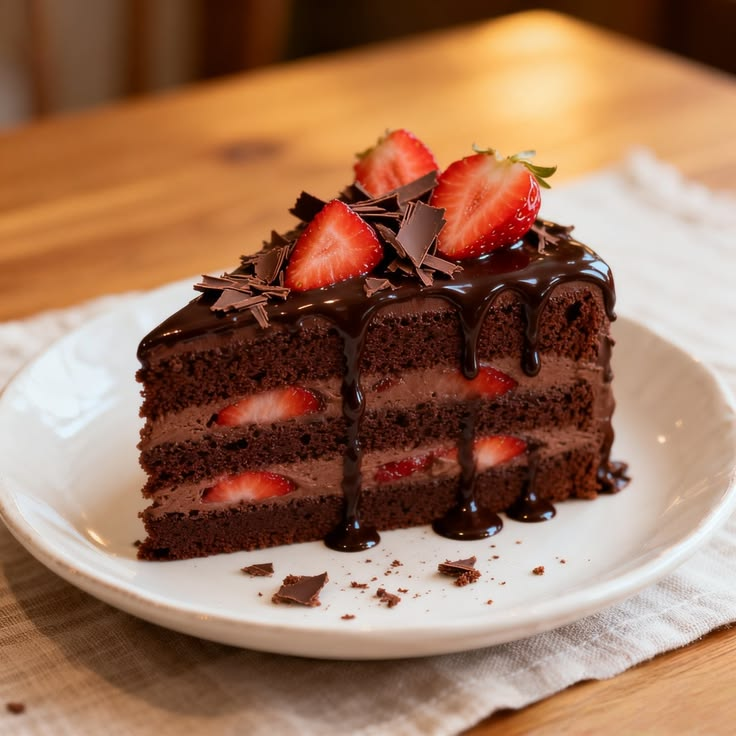
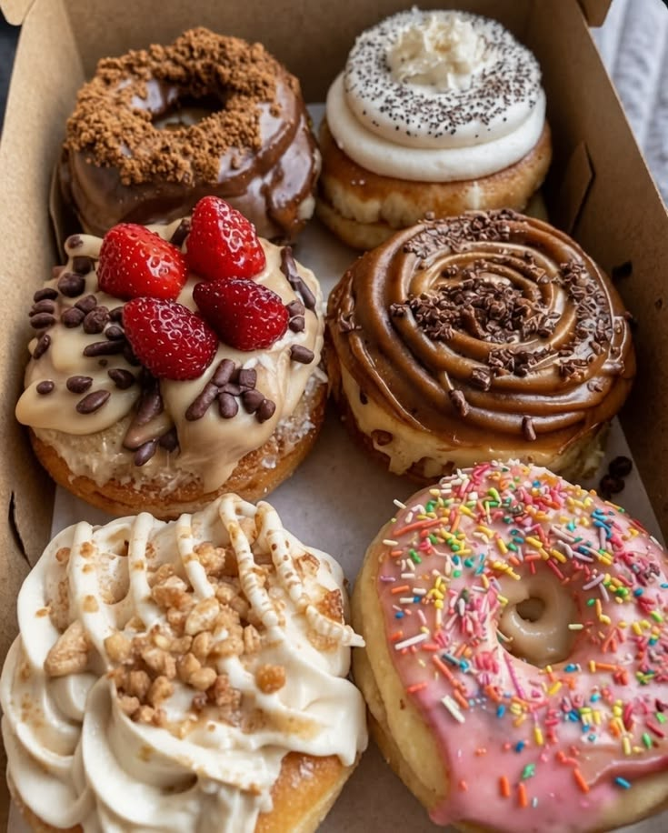
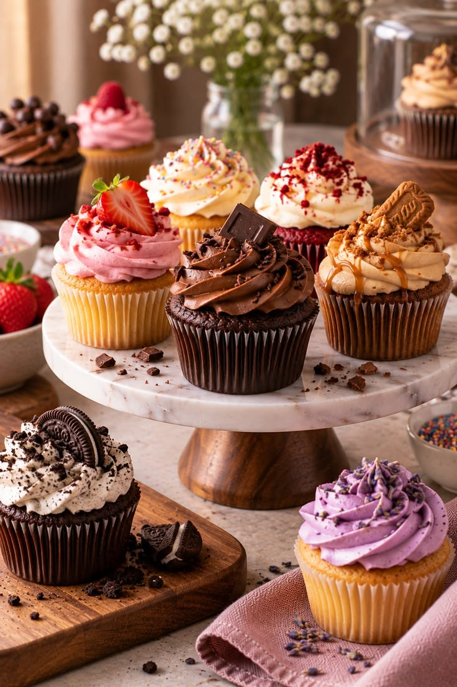

Pastel de chocolate
Suave, húmedo y con cobertura de chocolate.
El chocolate es uno de los ingredientes más utilizados en la repostería. Se puede encontrar en tortas, galletas, brownies y muchas otras preparaciones.

Suave, húmedo y con cobertura de chocolate.

Se pueden decorar con chocolate y otros ingredientes.

Porciones pequeñas que permiten distintas decoraciones.